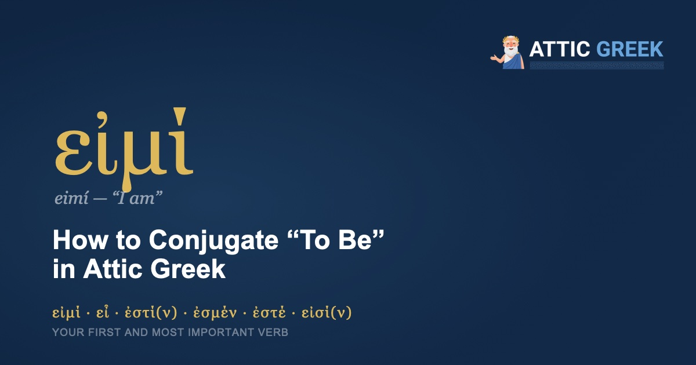

Every language has one verb you cannot avoid. In English it's "to be." In Attic Greek, it's εἰμί (eimí) — and it happens to be one of the strangest, most irregular verbs in the entire language.
That's not bad luck. It's a pattern. "To be" is one of the oldest verbs in any Indo-European language, and the oldest verbs are usually the most irregular — they were already ancient and worn smooth by use before Greek grammar had fully standardized. English shows the same fingerprint: am, is, are, was, were — five different shapes for one verb, because "to be" is older than the rules.
So before you memorize the pattern, know this: the irregularity is not a flaw in the language. It is a sign of how essential this word has always been.
What does εἰμί mean?
εἰμί means "I am." It is the first-person singular present of the verb "to be" — existence, identity, and location all live inside this one small word family. When Aristotle wrote ἄνθρωπός ἐστι ζῷον πολιτικόν — "man is a political animal" — that ἐστι is this verb. When Plato wrote ἡ δὲ σοφία ἐπιστήμη ἐστίν — "wisdom is a form of knowledge" — same verb again. You cannot make a single philosophical claim in Greek without it.
How do you conjugate εἰμί in the present tense?
Here is the full present indicative:
| Person | Greek | Transliteration | English |
|---|---|---|---|
| I am | εἰμί | eimí | I am |
| you are (sg.) | εἶ | ei | you are |
| he/she/it is | ἐστί(ν) | estí(n) | he/she/it is |
| we are | ἐσμέν | esmén | we are |
| you are (pl.) | ἐστέ | esté | you are |
| they are | εἰσί(ν) | eisí(n) | they are |
Notice the movable ν (nu) on ἐστί and εἰσί — Attic Greek adds it before a vowel or at the end of a sentence, purely for smoother sound. It doesn't change the meaning.
One quirk worth knowing early: unlike most Greek verbs, εἰμί is an enclitic in several of its forms — meaning ἐστί and the others often lean on the previous word and lose their own accent in a sentence. You'll notice this as you read authentic texts; single Greek words sometimes look accentless not by mistake, but because they're leaning on a neighbor.
Why is εἰμί irregular?
Most Attic Greek verbs follow a visible pattern — you can see the stem, then add endings. εἰμί doesn't give you that luxury. It's what's called an athematic verb: instead of a connecting vowel between the stem and the ending, the endings attach almost directly to a very old, worn-down root. That root traces back to the Proto-Indo-European h₁es-, the same ancient root that gives English "is," Latin "est," Sanskrit "asti," and German "ist." When you say ἐστί, you are, in a real sense, saying the same word humans have been saying for "is" since before Greek, Latin, or English existed as separate languages.
What about the past — how do you say "I was"?
The imperfect (Attic Greek's ordinary past tense for an ongoing or general past state) is:
| Person | Greek | English |
|---|---|---|
| I was | ἦ / ἦν | I was |
| you were | ἦσθα | you were |
| he/she/it was | ἦν | he/she/it was |
| we were | ἦμεν | we were |
| you were (pl.) | ἦτε | you were |
| they were | ἦσαν | they were |
This is the tense you'll meet constantly in narrative Greek — Thucydides describing what a city was, Plato setting a scene with "it was evening" (ἦν δὲ ἑσπέρα, as the Symposium opens).
Is there a future tense — "I will be"?
Yes, but here the irregularity takes a new turn: εἰμί has no future of its own in the active voice. Instead, Attic Greek borrows middle-voice endings to build the future:
| Person | Greek | English |
|---|---|---|
| I will be | ἔσομαι | I will be |
| you will be | ἔσῃ / ἔσει | you will be |
| he/she/it will be | ἔσται | he/she/it will be |
| we will be | ἐσόμεθα | we will be |
| you will be (pl.) | ἔσεσθε | you will be |
| they will be | ἔσονται | they will be |
If that -μαι/-σαι/-ται pattern looks familiar, it should — those are the same endings used across all Greek middle-voice verbs. "To be" doesn't get its own future form; it borrows one, the same way English "go" borrows "went" from an entirely different verb.
What's the infinitive and participle?
The infinitive — "to be" itself — is εἶναι. You'll see it constantly in philosophical Greek, since so much of Plato and Aristotle is concerned with the nature of being itself (τὸ εἶναι, "the being," is practically a technical term in Aristotle's metaphysics).
The present participle is ὤν, οὖσα, ὄν (masculine, feminine, neuter) — "being," or "the one who is." This little word becomes enormous in later Greek philosophy and theology; τὸ ὄν, "that which is," is the starting point of an entire branch of metaphysics.
Does εἰμί have an aorist or perfect tense?
No — and this is worth knowing so you don't go looking for one. εἰμί only has present, imperfect, and future forms. There is no aorist ("I was, at a specific completed moment") and no perfect ("I have been") built from this root. When Greek needs those meanings, it reaches for other verbs — most often forms of γίγνομαι ("to become," "to happen") stand in for the missing pieces. This is called suppletion: one verb quietly filling the gaps left by another. English does this too — "go" in the past tense simply becomes "went," borrowed wholesale from an unrelated verb "wend."
A few lines to practice on
Once the present tense feels familiar, this line from the Apology puts it to work immediately:
ὁ δὲ ἀνεξέταστος βίος οὐ βιωτὸς ἀνθρώπῳ.
The unexamined life is not worth living for a human being.
Plato, Apology 38a
There's no ἐστί written here at all — and that's its own lesson. In Attic Greek, forms of "to be" are very often omitted in the present tense when the meaning is clear from context. Greek doesn't need to say "life is not worth living" — the sentence carries "is" invisibly. Learning to recognize where an unwritten ἐστί belongs is one of the quiet skills that separates an early reader from a fluent one.
Why start here?
Every lesson after this one leans on εἰμί. Every definition ("X is Y"), every description, every philosophical claim in Plato or Aristotle runs through some form of this verb. It's irregular precisely because it's indispensable — worn down by three thousand years of use into the shape you see today. Learn it once, thoroughly, and the rest of Attic Greek grammar has one less thing to trip you up on.
Learn εἰμί the way it's actually used
Attic Greek teaches Ancient Greek from the alphabet up — 210 structured lessons, quizzes, flashcards, and annotated readings from Homer, Plato, and the great classical authors, with Socrates himself as your guide.
Start with 5 free lessons →Five lessons and the opening of the Odyssey, free forever. Then $4.99/month or $34.99/year.